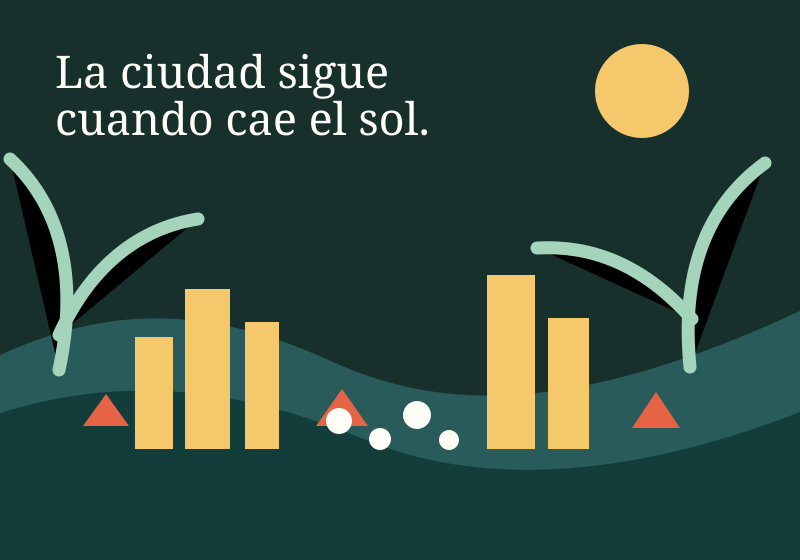

Cali se mueve todos los días
Encuentra un plan que sí te quede cerca.
Bibing reúne eventos culturales, deportivos y gastronómicos en un solo lugar para que descubras qué hacer sin perder tiempo buscando en muchas redes.
26 planes esta semana5 zonas de Cali

Hoy, 7:00 p. m.
Salsa al parque
Salsa al parque
A 12 minutos
San Antonio
San Antonio
Para esta semana
Planes que están sonando
Antes de salir
Una agenda simple para organizar el fin de semana
Además de guardar eventos, puedes revisar las horas principales y comparar opciones de forma rápida.
- Los eventos indican zona, precio y horario.
- La asistencia se confirma desde la ficha del evento.
- La agenda se conserva en este navegador.
| Momento | Plan recomendado |
|---|---|
| Mañana | Ruta en bici por el río |
| Tarde | Feria de café y diseño |
| Noche | Salsa al parque |
Una búsqueda menos complicada
Todo lo importante antes de salir
- 01
Explora
Busca por categoría, fecha o zona.
- 02
Compara
Revisa horarios, precio y ubicación.
- 03
Guarda
Arma tu lista de próximos planes.
Un momento para decidir
Activa el ambiente y elige tu próximo plan.
Este botón reproduce una señal breve generada por el sitio. No requiere descargar ningún archivo.